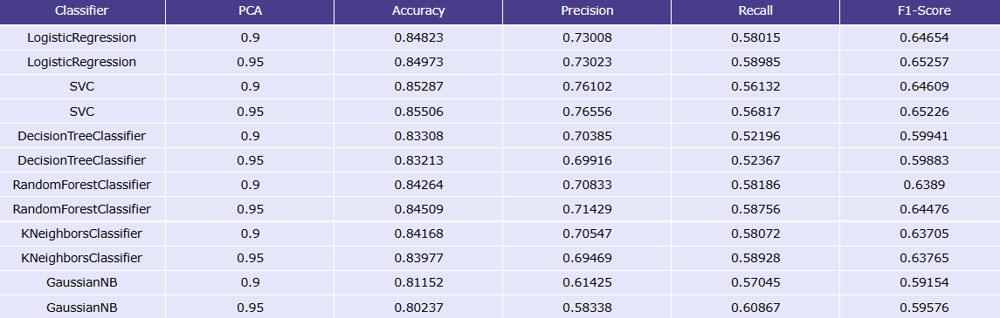
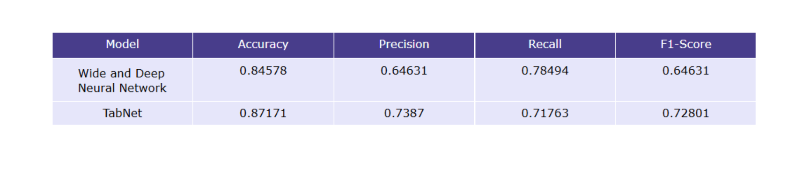

1. Exploratory Data Analysis
Dataset Overview
Adult Census Income Dataset contains demographic and occupational information from the 1994 U.S. Census database. Each record includes personal, employment, and economic attributes.
- 48,842 instances × 14 attributes
- Income labels:
<=50Kor>50K - Numerical features:
age, fnlwgt, education-num, capital-gain, capital-loss, hours-per-week - Categorical columns:
workclass, education, marital-status, occupation, relationship, race, sex, native-country
Income Distribution
The dataset shows a clearly imbalanced distribution of income labels, with the <=50K class being significantly more frequent than the >50K class.

Numerical Features
Numerical features such as capital-gain and capital-loss are highly skewed.

Categorical Features
Categorical features like native-country, occupation have a large number of unique categories.

2. Data Preprocessing
Imputation of Missing Values:
Numerical features: missing values were handled using strategies:
median,mean, orconstant.Categorical features: missing categories were filled using
most_frequentorconstant.
Encoding Categorical Features:
One-Hot Encoding: converts each category into a binary vector.
Ordinal Encoding: assigns a unique integer to each category.
Feature Scaling:
Standard Scaling: transforms numerical features to have zero mean and unit variance.
Min-Max Scaling: rescales features to a specific range (usually
0–1).
Dimensionality Reduction:
Principal Component Analysis (PCA) can be applied to reduce dimensionality while retaining most of the variance.
3. Machine Learning Models
Models
Several traditional machine learning algorithms were trained and evaluated on the dataset:
Logistic Regression:
max_iter=300Support Vector Machine (SVM)
Random Forest
Decision Tree:
max_depth=6K-Nearest Neighbor (KNN):
n_neighbors=13Gaussian Naive Bayes
Preprocessing
The model applies the following data preprocessing steps:
Imputation:
medianfor numerical,constantfor categoricalEncoding:
onehotScaling:
standard

Logistic Regression and Support Vector Machine achieved the highest F1-score
(~0.65).Using PCA that retains 95% of the variance performs better compared to using PCA with 90% variance.
4. Deep Learning Models
Models
Two deep learning models were implemented to explore their performance on tabular data:
Wide & Deep Neural Network: combines a wide linear model (memorization) with deep neural networks (generalization) for structured data.
TabNet: uses sequential attention to choose which features to reason from at each decision step, suitable for tabular data.
Configuration
The model uses several hyperparameters that can be adjusted within the pipeline:
learning rate: 1e-3weight_decay=1e-5batch_size=256epochs=30dropout=0.2early_stopping=True

TabNet consistently achieved higher F1-score compared to the Wide & Deep Neural Network, demonstrating its effectiveness for tabular datasets.
Deep learning models generally outperform traditional ML models when sufficient data and feature preprocessing are applied.
5. Conclusion
- Deep learning models tend to achieve higher predictive performance on complex tabular data, especially when interactions among features are non-linear.
- Proper preprocessing significantly impacts model performance more than simply changing algorithms.
- Using PCA with 95% variance retains more information than 90%, often leading to better model generalization.
- TabNet is recommended when leveraging deep learning for tabular datasets